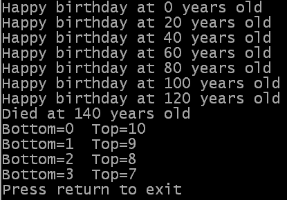

While <expression>
; Instructions
Wend
As you can see, the While...Wend loop has a very simple structure. The way it operates
is similar to the loop of a For...Next loop. The loop starts by checking the value of
the expression. If this value is false then the loop is exited and the program continues
executing from the next instruction after the Wend keyword. If the value of the expression
is true then the instructions inside the loop are executed. The loop then repeats.
So the overall behaviour of a While...Wend loop is that while the expression is
true, the loop executes.
The source code below shows some example uses of While...Wend loops. You can also get it from here:
If OpenConsole()
age.w = 0
While age <= 120
PrintN("Happy birthday at "+Str(age)+" years old")
age = age + 20
Wend
PrintN("Died at "+Str(age)+" years old")
bottom = 0
top = 10
While bottom<>top And bottom<4
PrintN("Bottom="+Str(bottom)+" Top="+Str(top))
bottom + 1
top - 1
Wend
While 0
PrintN("You will never see me")
Wend
PrintN("Press return to exit")
Input()
CloseConsole()
EndIf
End
 The first While...Wend loop in that example shows something which behaves in a similar way to a For...Next loop. The loop counter variable, in this case called age, is set to a value before the loop starts. The loop repeats while the age variable is less than or equal to some other value (in this case 120) - this is the same operation as is performed by For...Next loops, if you could see the loop condition. During the loop some information showing the current value of the counter variable is printed out. Finally, at the end of every loop another value (in this case 20) is added to the counter variable.
The second While...Wend loop in this example shows that you can have more flexible loop conditions than with a For...Next loop, because you can use any kind of expression to control whether the loop repeats or not. In this case, both variables top and bottom are checked against each other and bottom is also checked against a numeric constant.
The final While...Wend loop in the example proves that the expression for controlling the execution of the loop really is checked before anything else is done. If you remember, we previously said that zero is the same as false, so in this case the loop expression is always false and therefore the loop never executes. Since the string is never displayed in the console, we know that the expression was checked first.
| Previous topic | Chapter contents | Next topic |
|---|---|---|
| Repeating instructions a number of times | User Guide contents | Repeating instructions until something happens |